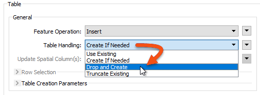

After completing this lesson, you’ll be able to:
FME can only be as fast as the database it reads from or writes to. This section will help FME increase its efficiency when working with databases.
Reading and filtering data (querying) from a database is nearly always faster when you can use the native functionality of the database. The previously introduced search envelopes and WHERE clauses techniques can drastically improve your database reading performance.
Besides readers, transformers can also be used to query database data. The SQLExecutor or SQLCreator are the best options, as these pass their queries to the database using native SQL. If you don’t want to write SQL, then you can use the FeatureReader transformer, but be aware this transformer is more generic and won’t give quite the same performance.
The SQLCreator can be used to generate features from an SQL query on a database.
The SQLExecutor issues a query for each feature that enters its Initiator port. This can be useful when you need to make multiple queries.
For example, here, a query is issued to the database for every Neighborhood feature that enters the SQLExecutor:
Generally, the output from the SQLExecutor is an entirely new feature. If you want to retrieve attributes to attach to the incoming feature, then the DatabaseJoiner transformer is more appropriate.
If you are comfortable working with SQL, the SQL family of transformers usually offers a more performant solution than a native database reader. Learn more.
⭐New for FME 2023.1: use the AI Assist button in compatible transformers to help you craft SQL statements.
Whereas the performance of reading from a database mainly depends on the database setup itself, many FME parameters can help fine-tune the overall performance when writing to a database.
Remember that writing to a database incurs network overheads. There has to be a balance between various factors:
Each database writer has a set of parameters for handling these components. Not every format supports these, but the two most common parameters are Features Per Transaction and Features Per Bulk Write.
The Features Per Bulk Write parameter controls the second factor in the list (the amount of data stored by FME awaiting transfer to the database).
A numeric value defines the parameter. Features sent to an FME database writer get cached in memory until the number of features specified by this parameter is reached. Only then will they be sent to the database. This is also known as chunk size.
This parameter is a way to balance network traffic with FME performance. A higher number means FME caches more features (using more system resources) but makes fewer requests to the database (and therefore causes less network traffic).
A lower number means FME caches less data, but more requests are made to the database.
Features Per Bulk Write must also be considered against the value of Features Per Transaction.
For an example of this parameter, refer to the documentation on Bulk Write Size for the Oracle Non-Spatial writer.
Features Per Transaction (sometimes called Transaction Interval) controls the third factor in the list (the amount of data stored in the database awaiting committal).
This, too, is defined by a numeric value. Features sent to the database by FME are cached in the database's memory. When the number of features specified by this parameter is reached, FME sends the command to commit them.
Each commit adds delay to the writing process, so setting this parameter must balance the speed of the translation (set a higher number) against the risk that a translation may fail and features need to be rolled back (set a lower number).
Features Per Transaction Examples
If Features Per Transaction is set to 1, every feature is committed individually. If the process fails, only the last feature will be lost from the database. The cost for this reduced risk is a matching reduction in performance.
If Features Per Transaction is set to a very high value (more than the number of features being written), then only one commit takes place. If the process fails, all features submitted to the database will be lost. The benefit of this increased risk is a matching increase in performance.
An interaction between these two parameters controls where features are cached.
If Features Per Transaction is less or equal to Features Per Bulk Write, then FME caches several features and sends them to the database, immediately committing them.
If Features Per Transaction is greater than Features Per Bulk Write, then FME sends features to the database, which will be cached until the transaction commit total is reached.
The Transaction and Chunk parameters can differ from format to format, so refer to the format documentation.
Whereas indexes can improve performance for reading data, they can cause a significant reduction in writing speed.
That’s because the database automatically updates the index with every written feature. This occurs on a per-feature basis, regardless of commit intervals.
To remedy this, it’s suggested that you drop (delete) indexes before bulk-inserting data into a database table. You can do this directly on the database or using an FME SQLExecutor transformer.
A writer feature type also has options to truncate or drop tables when writing to them:

As with the above, dropping a table is more efficient than truncating it because the drop action also removes the indexes.
You may want to turn off networking connectivity when writing data to a Geodatabase geometric network for similar reasons.